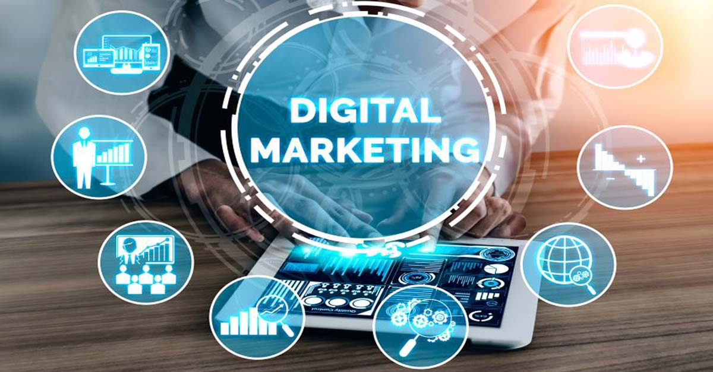

¿QUE ES EL MARKETING DIGITAL?
Hoy en día, el internet está incorporado a nuestra vida de tal manera que es casi imposible hacer cualquier cosa sin ella. No es casualidad que es cada vez más difícil ver a las personas desconectadas de sus celulares, teniendo internet al alcance de los dedos.

Philip Kotler es considerado el padre del Marketing y lo define como "El proceso social a partir del cual las personas y grupos de personas satisfacen deseos y necesidades con la creación, oferta y libre negociación de productos y servicios de valor con otros".
Y si nuestra vida ya no es más la misma con internet, se puede decir lo mismo del proceso de compra. Hoy por hoy es muy común que busquemos productos o servicios que queremos en internet, ya sea para buscar los mejores precios, para buscar informaciones sobre determinado producto o servicio o incluso para descubrir más sobre un problema que tenemos
A todo eso le llamamos de Marketing Digital conjunto de informaciones y acciones que pueden ser hechas en diversos medios digitales con el objetivo de promover empresas y productos.
El Marketing Digital o Marketing Online es el conjunto de estrategias direccionadas a la comunicación y comercialización electrónica de productos y servicios.
COMO NOCIO EL MARKETING DIGITAL
En los años 90’s surgió la primera versión de Internet, un poco diferente a la que conocemos hoy: la llamada Web 1.0. Ese viejo Internet no permitía la interacción de los usuarios con páginas web de manera activa, pero dejaba que encontraran información en un sistema de búsquedas simple. Era como una biblioteca en la que entrabas, encontrabas lo que querías, pero no podías alterar el contenido que encontraste. En este momento primitivo del Internet se creó el término "Marketing Digital". No obstante, todavía era muy parecido al marketing tradicional, pues la comunicación era unilateral, hecha por la empresa en un sitio institucional y el consumidor tan solo recibía pasivamente el contenido, sin una interacción cercana entre las dos partes.
En 1993, los usuarios de Internet comenzaron a relacionarse más con las empresas que anunciaban en la web, ya que en esta época surgieron los primeros anuncios en los que se podía hacer clic. Sin embargo, fue tan solo hasta el año 2000 que el marketing digital se hizo más parecido a lo que conocemos hoy en día. La llegada de la Web 2.0 permitió que cualquier persona se convirtiera en un productor de contenidos, lo que hizo más democrático el flujo de la comunicación digital.
VENTAJAS Y DESVENTAJAS DEL MARKETING DIGITAL
VENTAJAS
- Alcance global
- Mayor segmentación
- Menor costo
- Medición precisa
- Mayor interacción
DESVENTAJAS
- Competencia
- Exceso de información
- Dependencia de la tecnología
- Dificultad para medir el éxito
- Riesgo de seguridad
ALGUNOS CONCEPTOS BASICOS DE MARKETING DIGITAL
| PALABRAS | CONCEPTO |
| ALCANCE | Mide el numero de personas a las que
se busca impactar con una campaña |
| BUYER PERSONA | Es una representacion ficticia
del cliente ideal y sirve
para enfocar las estrategias |
| ENGAGEMENT | Es el vinculo entre una marca y su publico,
lo que da una oportunidad mayor de
ventas y fidelizacion |
| INBOUND MARKETING | Es una metodologia que atrae a
las audiencias con cotenido
y de forma no intrusiva |
| LEAD | Es un posible cliente que
deja sus datos en un formulario
u otro medio de contacto |
| SEO | Es la optimizacion de
los contenidos para se posicionen
en los buscadores como google |